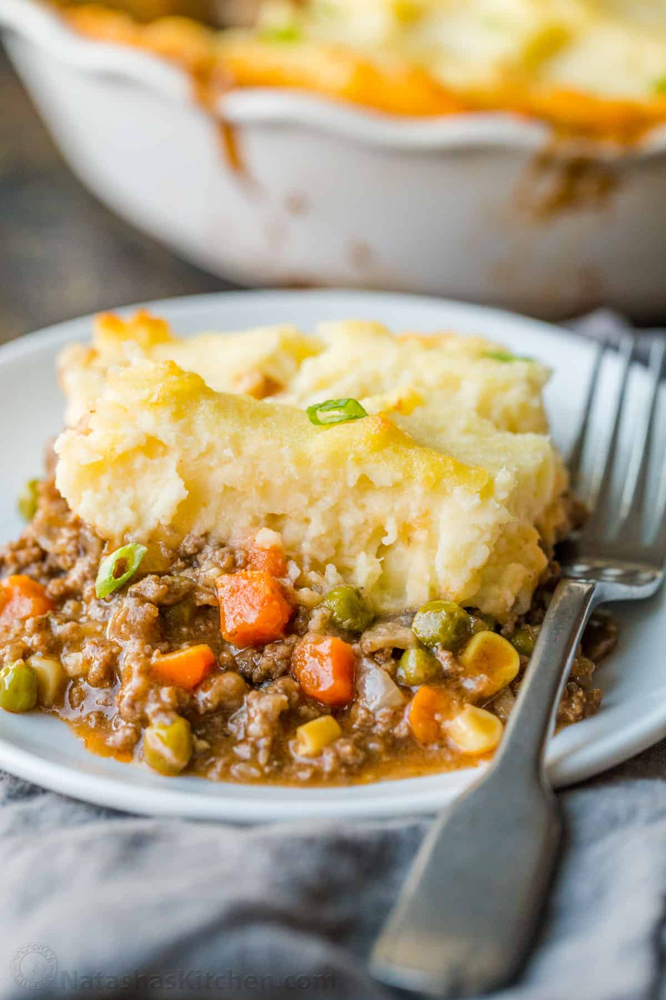

Making and Baking of Amazing Shepherd's Pie.
This recipe is inspired on Best Classic Shepperds Pie from the website thewholesomedish.com.
Making the best Shepherd's Pie is not difficult. But, there are a few steps to it. You have to make the meat mixture, the mash patatoes, assemble
the cassarole, and bake it. It is absolutely very tasty.
The Ingredients
Meat Filling:
- 2 tablespoons olive oil
- 1 cup chopped yellow onion
- 1 lb. 90% lean ground beef - or ground lamb
- 2 teaspoon dried parsley leaves
- 1 teaspoon dried rosemary leaves
- 1 teaspoon dried thyme leaves
- 1/2 teaspoon salt
- 1/2 teaspoon ground black pepper
- 1 tablespoon Worcestershire sauce
- 2 garlic cloves - minced
- 2 tablespoons all purpose flour
- 2 tablespoons tomato paste
- 1 cup beef broth
- 1 cup frozen mixed peas & carrots
- 1/2 cup frozen corn kernels
Potato Topping:
- 1 1/2-2 lb. russet potatoes - pelled and diced
- 8 tablespoons unsalted butter
- 1/3 half & half - half whole milk and half cream
- 1/2 teaspoon garlic powder
- 1/2 teaspoon salt
- 1/4 teaspoon ground black pepper
- 1/4 cup parmesan cheese
The Necessary Steps
Making the Meat Filling:
- Add the oil to skillet and place it over medium-high heat for 2 minutes. Add the onions. Cook 5 minutes, stirring occasionally.
- Add the ground beef (or ground lamb) to the skillet and break it apart with wooden spoon. Add the parsley. rosemary, thyme, salt, and pepper.
Stir well. Cook for 6-8 mintures, until the meat is browned, stirring occasionally.
- Add de Worcestershire sauce and garlic. Stir to combine. Cook for 1 minute.
- Add the flour and tomato paste. Stir until well incorporated and no clumps of tomato paste remain.
- Add the broth, frozen peas and carrots, and frozen corn. Bring the liquid to a boil then reduce to simmer. Simmer
for 5 minutes, stirring occasionally.
- Set the meat mixture aside. Preheat oven to 200 deg C.
Making the Mashed Potatoes:
- Place the chopped potatoes in a large pot. Cover the potatoes with water. Bring the water to a boil. Reduce to simmer.
Cook until patatoes are fork tender, 10-15min.
- Drain the potatoes in a colander. Return the potatoes to the hot pot.
- Add butter, half & half, garlic powder, salt and pepper. Mash the potatoes and stir until all the ingredients are mixed together.
- Add the parmesan cheese to the potatoes. Stir until well combined.
Assembling the Casserole:
- Pour the meat mixture into a 9x9 (or 7x7) inch baking dish. Spread it out into an even layer. Spoon the mashed potatoes on top of the meat.
Carefully spread into an even layer.
- If the baking dish looks very full, place it on the rimmed baking sheet so that the filling doesn't bubble over into your oven. Bake in the preheated oven,
200 deg C, for 25-30 minutes. Cool for 15 minutes before serving.